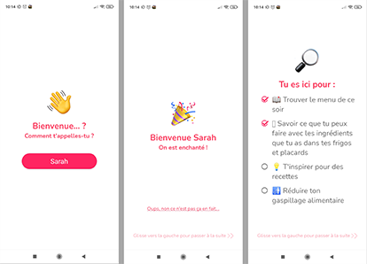
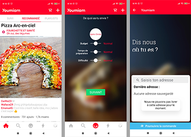
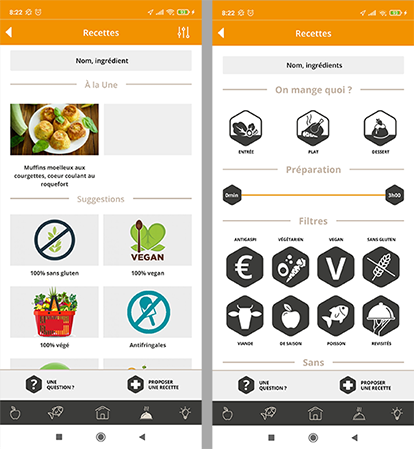
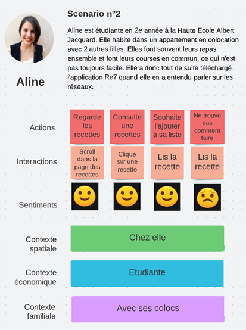
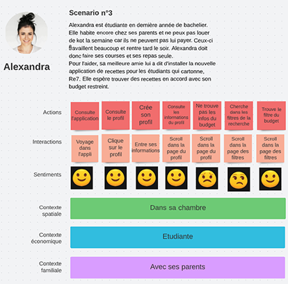
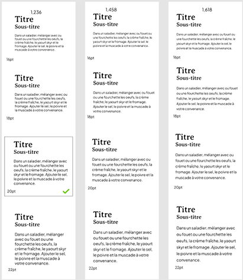
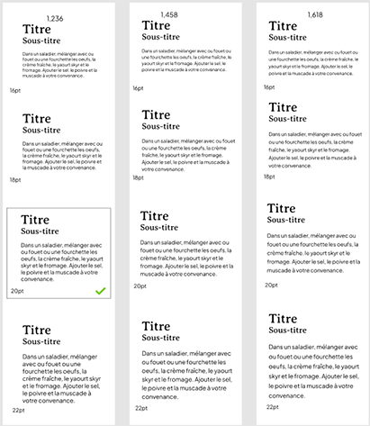

Case-study
La fin de cette année arrive tout doucement et avec elle le tant redouté TFA...
Je fais quoi?
C'est pas tout ça mais maintenant il faut trouver une idée, une bonne idée. Et pour être honnête, là sur le moment je n'en ai aucune. Ça commence bien dis donc… Alors je cherche, je me pose des questions.
Qu'est-ce que j'aime faire ? Quels sont mes hobbies ? Dans la vie de tous les jours, est-ce que je rencontre des difficultés auxquelles je pourrais apporter une solution ?
Je cherche pendant un long moment. Aucune des idées auxquelles je pense ne m'inspire vraiment. Et puis pas question de reprendre le sujet de l'année dernière. Mais un jour en cuisinant avec ma colocataire une idée me vint.
Ce n'est pas simple de manger sain avec un budget étudiant. Les recettes proposées en ligne sont toujours assez onéreuses. Et on ne sait jamais quoi faire pour le repas. Cela se termine souvent en Takeaway ou Ubereats. Alors pourquoi ne pas faire une application de recettes spécialement pour les étudiants?
Comprendre l’utilisateur
Un début d’idée et des google forms
Voilà j'ai mon idée. Mais ce n'est pas encore gagné pour autant. Avant de lancer un concept il faut déjà savoir si cela intéresserait des utilisateurs. Je dois donc commencer par les interroger. J'émets donc une hypothèse.
Je pense qu’une application de recettes saines et low cost serait intéressante pour les étudiants. Je pourrai le vérifier grâce à un formulaire. Je pourrai le mesurer si 80% des étudiants interrogés sont intéressés.
Si je valide mon hypothèse, je pourrais me lancer dans mon travail. Je crée un premier formulaire que je partage avec les étudiants de mon entourage. J'obtiens malheureusement peu de réponses, mais je ferai avec. En outre, 100 % des réponses sont favorables à mon idée d'application.
Galvanisée par ces ondes positives, je crée un second formulaire avec des questions plus précises. Je propose plusieurs fonctionnalités en demandant à l'utilisateur de noter sur une échelle de 1 à 5 la pertinence de chacune. Je repose également la question de savoir si oui ou non l'utilisateur est potentiellement intéressé par mon idée. Encore une fois 100 % des utilisateurs y sont favorables. J'observe le pourcentage des indices de pertinence de chaque question.
Je constate que les utilisateurs sont intéressés par presque toutes les fonctionnalités que j'ai proposées. Cela ne m'aide pas beaucoup. Je vérifie les commentaires qu'ils m'ont laissés. Certains mettent en avant que l'une ou l'autre fonctionnalité proposée est presque obligatoire dans une application de recettes. Par exemple, le fait d'indiquer les allergies. Je prends en compte les remarques qui m'ont été faites et je sélectionne les fonctionnalités que je compte développer.
Comment ça se passe chez les autres?
Eh ben voilà! Maintenant que l’idée de projet est validée par les utilisateurs et que les fonctionnalités sont établies, il est temps de commencer à mettre en place le projet. Oui… Mais non. Avant toute chose, il est important de voir si le concept n’a pas déjà été exploité par quelqu’un d’autre. C’est parti pour un petit benchmark (ou audit). Pour ce faire, je télécharge sept applications dont le concept ressemble au mien. Une par une, je les consulte et je liste les fonctionnalités ainsi que les avantages et inconvénients. Ce qui donne ceci :
Frigo Magic
Positif : Création d’un profil afin de visionner des recettes selon son régime alimentaire. On peut choisir ce que l’on souhaite cuisiner via la barre de recherche ou en scrollant dans la page et des recettes adéquates sont proposées. Il y a une liste d’aliments assez importante dans laquelle on peut indiquer si on consomme régulièrement, parfois ou jamais certains ingrédients pour que l’application puisse proposer des recettes que l’on est sûr d’apprécier. Il est possible d’ajouter des recettes dans un planning afin de prévoir les repas de la semaine. Les valeurs nutritionnelles de la recette sont indiquées dans un petit menu déroulant. On peut sélectionner le nombre de personnes pour qui on cuisine. On peut cocher les étapes de la recette afin de mieux s’y retrouver. Un bouton play se trouve au-dessus des étapes pour les lire à voix haute.
Négatif : Dans les recettes, la liste des ingrédients et leur système de ronds et carrés ne sont pas très clairs. Il n’est pas facile de comprendre ce que l’on doit faire avec tous ces ingrédients indiqués. Les quantités ne sont pas indiquées dans la liste d’ingrédients mais dans la recette directement, ce qui n’est pas très pratique.
Youmiam
Positif : Système de recherche intéressant qui propose de choisir la recette en fonction du type de plat à préparer mais aussi en fonction du budget, du temps de préparation et de la difficulté du plat. Le système de question à swiper façon application de rencontre est intéressant.
Négatif : Les interfaces de configuration du profil personnalisé ne sont pas fonctionnelles. L’application est difficile à comprendre. Il n’est pas possible de revenir en arrière lorsque l’on choisit un type de plat sur l’écran de recherche. Lorsque l’on arrive sur l’interface de commande, l’application beug et supprime le panier.
GoodSesame
Positif : Profil personnalisable, il est possible d'indiquer le nombre de personnes, le budget et son niveau en cuisine. Il est également possible d'indiquer ses préférences alimentaires et ses allergies. Si ton allergie n'est pas listée, il est possible de contacter les créateurs de GoodSesame afin de le signaler. L'application propose un service qui permet de choisir des recettes pour toi en fonction de tes allergies, de tes préférences alimentaires ainsi que du nombre de repas que tu souhaites prévoir. Navigation épurée et possibilité de consulter d'anciennes listes de courses. Il n'est pas nécessaire de scroller indéfiniment pour pouvoir consulter les ingrédients, les étapes et les ustensiles. Tout est accessible en un seul clic car chaque catégorie d'informations est regroupée dans des tabs.
Négatif : Il est obligatoire de créer un compte pour accéder à l'application. Le menu “home” ne ressemble pas vraiment à une homepage, zone de clic très petite, manque de contraste entre le header et le bouton de recherche, manque d’affordance dans le choix des icônes, erreur de design (onglet représenté comme un bouton), mauvais agencement des informations, non-respect des lois de la Gestalt, manque d’interlignage dans les paragraphes, zones de clic trop petites, absence de hiérarchie sur la page des filtres et sur la page du panier. De plus, les recettes sont trop détaillées, il y a trop d'éléments dans un si petit espace. Sur l'écran de la liste de courses, on ne comprend pas bien ce que l'on doit faire. Si on veut ajouter des recettes à la liste de courses, le bouton nous fait revenir à la homepage.
Etiquettable
Positif : L’accueil de l’application est simple et bien présenté. Les catégories sont assez complètes. L’interface des recettes indique le temps de préparation, les valeurs nutritionnelles, les quantités de chaque ingrédient et l’éco-score.
Négatif : Les barres de recherche ne sont pas intuitives et sont d’ailleurs peu visibles. Il y a beaucoup d'informations, voire trop d’informations, et cela crée une surcharge cognitive. L’interface des filtres est mal agencée, la hiérarchie d’informations est catastrophique et les icônes sont trop imposants par rapport au reste. Sur l’interface des recettes, il n’est pas possible de changer le nombre de personnes pour qui on cuisine. Les cartes de recherches de restos et magasins engagés sont difficiles à comprendre.
Cookpad
Positif : Il n'est pas nécessaire de créer un compte pour accéder à l'application. La barre de menu est ergonomique, les zones de clic sont assez larges et l'état actif est présent. Navigation assez fluide et ergonomique. Il y a une bonne cohérence visuelle et il est possible d'ajouter ses propres recettes.
Négatif : La homepage n’y ressemble pas vraiment, un peu trop d'informations qui crée une surcharge cognitive. Il y a un non-respect des lois de la Gestalt et une absence de filtres dans la recherche. Quelques soucis de contraste entre certains éléments
Jow
Positif : L'affichage des recettes est original. Chaque recette est expliquée en vidéo. Les fiches de recettes sont bien présentées. Le temps de préparation et le temps de cuisson sont indiqués. Les valeurs nutritionnelles sont indiquées. Chaque ingrédient est illustré d’une photo. Un bouton permet d'ajouter la recette à son panier.
Négatif : On ne comprend pas très bien ce que l'on doit faire lorsqu'on arrive sur l'application. Beaucoup de pubs, très commerciales. De plus, une absence de homepage et aucune suggestion de recettes. Il n'y a pas de filtre sur la page de recherche. Il faut beaucoup scroller pour obtenir les informations que l'on cherche.
Marmiton
Positif : La homepage est bien organisée, les catégories et suggestions sont pertinentes. L'application possède une fonctionnalité qui permet de planifier les recettes que l'on souhaite réaliser pour les 2 semaines à venir. Les catégories disponibles sur la page "Profil" sont intéressantes. Les filtres proposés sur la page de recherche sont cohérents et bien choisis.
Négatif : La page du profil fait partie de la homepage, il n'y a pas de page dédiée. Quelques manquement pour les lois de la Gestalt.
Création de l'appli
Malgré ce que l'on pourrait croire, travailler sur un sujet que l'on choisit soi-même n'est pas si facile.
La partie UI/UX est celle que je trouve la plus intéressante, mais aussi la plus compliquée. Je ne sais jamais par où commencer. Et ce projet ne fait pas exception. Néanmoins, je me lance et je mets en place mes premiers écrans. Ce n'est pas extraordinaire mais ça me permet de mettre de l'ordre dans mes idées.

J'ai donc 5 écrans principaux et potentiellement un menu. Je réalise un premier petit test utilisateur qui met en évidence les incohérences. Tout d'abord le menu n'est pas identique partout ce qui est problématique. Ensuite la homepage n'a pas l'air d'en être une. Et troisième point, le planning est complété alors que l'utilisateur utilise l'application pour la première fois.
Un nouveau test utilisateur me fait comprendre que le planning n'est pas primordial dans mon application, donc je le supprime. Cela dégage un peu de place dans la barre de menu, ce qui la rend un peu plus facile à lire. Ensuite, l'affichage des recettes n’est pas optimal et donc à revoir. Il faudrait également modifier certains pictogrammes. Et puis il serait bien de mettre en page l'écran des filtres ainsi que le reste de celui du profil.
Après d'autres tests, j'ai modifié la liste de courses car les interactions ne sont pas évidentes pour l'utilisateur. La croix à côté de chaque élément de la liste est devenue un plus et un moins (+/-). J'ai également hiérarchisé le contenu pour une meilleure compréhension. J'ai aussi ajouté la possibilité de supprimer complètement un ingrédient de la liste par une icône de poubelle. La liste de recettes permettant la création de la liste de courses a été regroupée avec la page des favoris car l'utilisateur ne comprenait pas son utilité. Je n’avais pas encore réalisé les écrans de détails des recettes. C’est à présent chose faite.
On avance doucement mais sûrement. Avant de faire d'autres tests, je mets en page les derniers écrans nécessaires à mon application. Ainsi je crée l'écran du choix des recettes à ajouter dans la liste de courses et l'écran de création de profil. Je fais aussi quelques modifications sur les écrans existants pour une navigation plus fluide.
La barre de recherche qui se trouvait sur la homepage disparaît et fusionne avec l'écran des filtres. Après quelques recherches, je remarque que les jeunes qui constituent mon public cible passent beaucoup de temps sur Instagram. Je décide donc de mettre en page l'écran des recettes de la même façon que ce réseau social. Je modifie aussi la liste de courses en ajoutant la possibilité d'augmenter tous les aliments d'une recette au moyen d'une fenêtre pop-up. J'ajoute également la possibilité de télécharger cette liste sur le smartphone de l'utilisateur.
Suite à cela je m'attelle à la réalisation d'illustrations et d'icônes pour mon application. Dans la foulée je fais quelques recherches pour mon logo et dessine quelques croquis. Je les mets ensuite en page sur Illustrator et refait quelques essais avec différentes couleurs. Je change plusieurs fois d'avis et mon choix s'arrête finalement sur un dessin vectoriel d'un chapeau d'étudiant mélangé à une casserole. Le choix de couleur me pose problème un long moment mais au final j'opte pour un violet. Selon des études, le violet est une couleur peu utilisée dans les applications car c'est une couleur qui ne plaît pas aux hommes. Il est aussi dit que c'est la couleur de l'originalité.
Dans la tête d'un utilisateur
Lorsqu'on crée une application, il est important de la challenger pour vérifier que l'on rien oublié. Une des méthode pour cela, c'est de réaliser des "User Journey".
Conclusion : Je ne pensais pas qu’il était nécessaire de proposer les régimes alimentaires spécifiques dans cette version minimale de mon application. Mais je me suis rendue compte que cela fait partie des filtres de base, tout comme les allergènes.
Conclusion : Au début j’avais fait en sorte qu’on puisse ajouter les recettes à sa liste courses à partir de l’écran des favoris. Mais je me rends compte que l’utilisateur n’est pas censé le savoir, surtout si c’est la première fois qu’il utilise l’application. Il faut donc que l’utilisateur ait la possibilité d'ajouter la recette à sa liste à partir du descriptif.
Conclusion : Ce scénario me prouve qu’on est pas infaillible et qu’on ne peut pas toujours penser à tout. Il est possible de trier les recettes en fonction de son budget sur la page de recherche des recettes mais il n’est pas possible de le définir dans son profil, ce qui n’a pas de sens. Pour être raccord avec mon projet, il est important que l’utilisateur puisse définir son budget dans ses informations de profil.
Identité graphique
Couleur de texte
 

Pour le choix des polices, j'ai choisi la “Averia Sans” car elle a de la personnalité, ce qui permettra de donner un peu de caractère à mon design épuré. Quant à la police de corps de texte : elle est plus simple afin de ne pas apporter trop de complexité aux éléments. Elles sont toutes les deux sans-serif pour une meilleure lisibilité. Il était également important qu’elles possèdent une grande hauteur d'x et plusieurs graisses, qu’elles aient de grands caractères par rapport à la taille en points, que les caractères spéciaux soient inclus et que les lettres aient une forme distincte et ne puissent pas être confondues avec d'autres. Et enfin j'ai utilisé une valeur d'interligne de 150 %.
Point final
Grâce à ce projet qui conclut très bien cette année, j’ai pu me rendre compte de mes faiblesses mais surtout de mes forces. Malgré le fait d’avoir été démotivée et d’avoir échoué de nombreuses fois, je ne me suis pas découragée, j’ai continué d’avancer et j’ai donné le meilleur de moi-même.
De plus, j'ai compris beaucoup de choses sur le design et le code que je ne comprenais pas auparavant. Cela m'a beaucoup aidé dans ce travail et m'a permis d'avancer plus efficacement. À présent je me sens plus sereine à l'idée de faire mes stages en entreprise l'année prochaine.